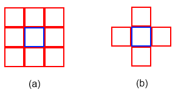
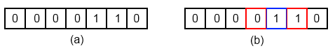
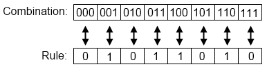

Elementary Cellular Automata in q
James Neill 07/09/2015
Cellular Automata
A cellular automaton (automata is the plural of automaton) is composed of a grid of cells, each of which is in one of several possible discrete states. For example a cell can be either 1 or 0/on or off/red, green or blue/etc. We refer to the current state of an automaton as a generation. The initial state is generation zero. Further generations are generated by applying a predetermined set of rules to each of the cells in the grid which may cause a change in state. A set of rules takes into account the cell the rule is being applied to and a neighbourhood of cells around that cell. For example, in a 2D automaton, a Von Neuman neighbourhood has the center (target cell), north, south, east and west cells. A Moore neighbourhood consists of the target cell and all adjacent cells.

Figure 1 - (a) The Moore neighbourhood of the blue cell. (b) The Von Neuman neighbourhood of the blue cell.

Figure 2 - Gosper glider gun. A 2D cellular automaton - Image source on wikipedia
Elementary Cellular Automata
An elementary cellular automaton is a one dimensional cellular automaton where each cell can only be 1 or 0 and the next generation is determined by a rule which is applied to the target cell and its two immediate neighbours.

Figure 3 - (a) An example elementary cellular automaton. (b) Neighbourhod of blue cell highlighted in red.
Since cells can either be 1 or 0 the target cell and its neighbourhood have a total of 23 = 8 possible configurations. Each of these configurations must result in the target cell being either a 1 or a 0 in the next generation which means that there are 28 = 256 possible rules for an elementary cellular automaton.

Figure 4 - Elementary cellular automata rule 90.
q Implementation
In order to implement elementary cellular automata in q we first need a way to convert a decimal number into binary. We can accomplish this by dividing the number by two then recording both the remainder (which will be 0 or 1) and the result. Then repeat for the result until the final result is 0. The binary number is all the recorded remainders written down from right to left. E.g for 6: $$\begin{align}\frac{6}{2}&=3\text{ rem }0\\\frac{3}{2}&=1\text{ rem }1\\\frac{1}{2}&=0\text{ rem }1\end{align}$$ Our remainders are 110 from right (bottom) to left (top) which is binary for 6. In q we create the decimal to binary function:
q)dtb:{1_reverse((div[;2]\)x) mod 2}
q)dtb 90
1 0 1 1 0 1 0We can now create a function which will output an 8 element list of 1s and 0s that we can apply to an elementary cellular automaton (we reverse here because of the way we apply the rule to indicies later):
q)constructRule:{reverse #[8-count a;0],a:dtb x}
q)constructRule 90
0 1 0 1 1 0 1 0We're also going to need to convert a binary number back into a decimal number. This is so we can select the correct update from the set of rules that corresponds to the configuration of the neighbourhood - a number between 0 and 7. In a binary number each digit represents an increasing power of 2 starting with the rightmost digit being 20. The corresponding decimal number is then the sum of these powers after they have been multiplied by their corresponding digit in the binary number. As an example let's look at the binary number for 6:
1 1 0 => ( 1 x 22 ) + ( 1 x 21 ) + ( 0 x 20 ) = 4 + 2 + 0 = 6 .
q)btd:{sum 2 xexp where 1=reverse x}
q)btd 0 1 0 1 1 0 1 0
90fBefore we leap ahead and start applying rules all over the place there is one more thing that needs to be considered. The numbers at the edge of the grid only have one neighbour. There are a couple of approaches to dealing with this. Probably the most common is to wrap around and use the cell on the opposite side as the neighbour. This can be accomplished by using the rotate function. Here is the function to apply the rule once to our automaton:
q)appRule:{if[count[y`o]=count y`i;:y];`i`o!(1 rotate y`i;y[`o],x`int$btd[3#y`i])}This function takes in 2 parameters. x is the rule we construct using the constructRule function. y is a dictionary with 2 key-value pairs: key `i is the input current automaton generation, key `o is the new generation after applying the rule to the first 3 cells in the current generation.
First we check to see if the number of elements in y`o is the same as the number of elements in y`i. If it is then we assume that the appRule function has been applied to all the elements in the current generation and we return the input. If it is not then we need to update `i and `o in y, then output the new dictionary. To update y`o we take the current version of y`o and append the result of the rules (parameter x) applied to the first 3 values in y`i. To update y`i we rotate the current value by 1 so that the next pass of appRule operates on the next cell to evaluate in the current generation. Here's a single pass example applying rule 90 to the grid 0 1 1 0:
// We rotate the initial value so that we wrap around
// the first neighbourhood evaluated is then 0 0 1
q)appRule[constructRule 90;`i`o!(-1 rotate 0 1 1 0;())]
i| 0 1 1 0
o| ,1
// Let's double check 0 0 1 is binary for 1
q)btd 0 0 1
1f
// So we want the element located at index 1 in the rule
q)constructRule[90][1]
1With this in hand all we need to do is keep iterating until we've evaluated the all the cells in the current generation. Let's wrap this up in a function that will also output the new generation with X for 1 and nothing for 0:
q)evalRule:{r:(appRule[x]/)[`i`o!(rotate[-1;y];())];-1 " X"r`o;r`o}
q)evalRule[constructRule 90;0 1 1 0]
XXXXIs this the correct value for our next generation?
Our rule is: 0 1 0 1 1 0 1 0
Cell 0 is 0 and has the neighbourhood 0 0 1 => 1 which will update to 1
Cell 1 is 1 and has the neighbourhood 0 1 1 => 3 which will update to 1
Cell 2 is 1 and has the neighbourhood 1 1 0 => 6 which will update to 1
Cell 3 is 0 and has the neighbourhood 1 0 0 => 4 which will update to 1
Finally we want to be able to run this for many generations.
q)eca:{-1 " X" x;evalRule[constructRule y]/[z;x];}
// 25 generations of rule 90 to generate sierpinsky triangle
q)eca[0000000000000000000000000000000000000000010000000000000000000000000000000000000000b;90;25]
X
X X
X X
X X X X
X X
X X X X
X X X X
X X X X X X X X
X X
X X X X
X X X X
X X X X X X X X
X X X X
X X X X X X X X
X X X X X X X X
X X X X X X X X X X X X X X X X
X X
X X X X
X X X X
X X X X X X X X
X X X X
X X X X X X X X
X X X X X X X X
X X X X X X X X X X X X X X X X
X X X X
X X X X X X X X